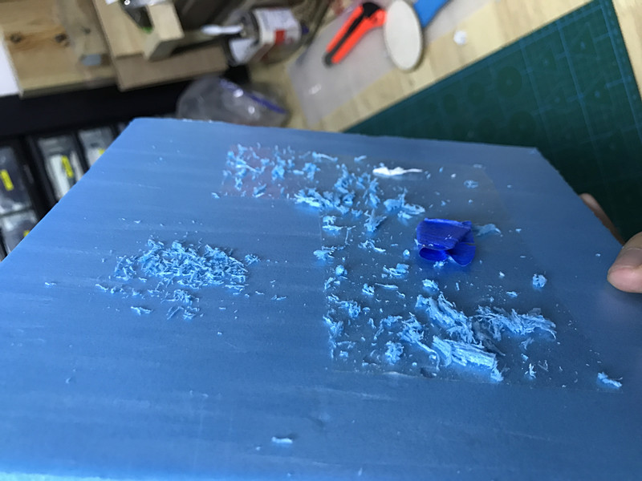
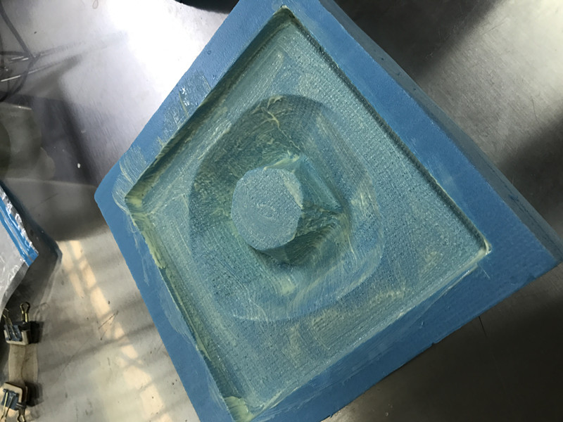
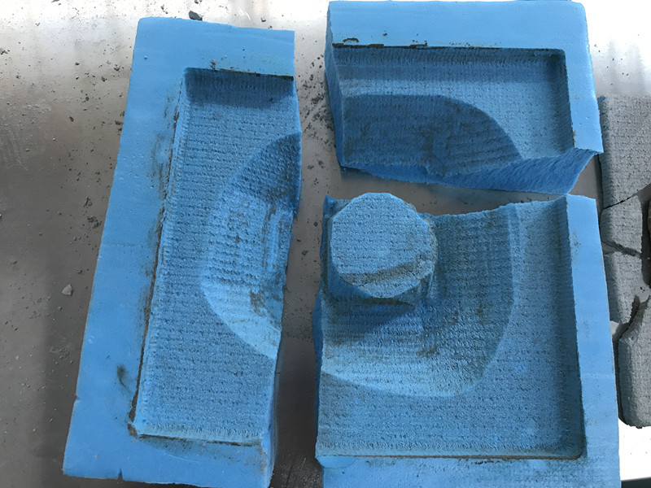
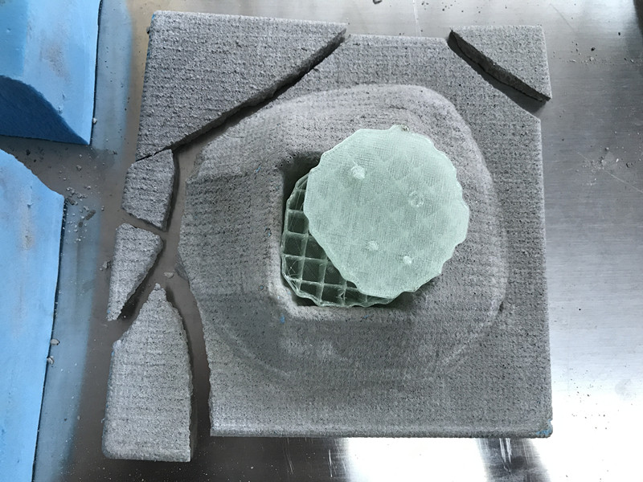

I met a problem when cutting the material. I didn't stick the material well to the bed, it moved during the cutting.(so i became the first one to use the emergancy buttom)
however I made it eventually it was a mod for volcano.
We have the idea of combine concrete and 3D print together, for me, I print the lavar for the volcano.
Applying vaseline to our foam to prevent the concrete stick to the foam.
We make the cement by mix the CEMENT MIX, sands, quick lime by 30:10:3 and stir them up.
After waiting 4 2days, it's time to ......
OK let's forget about it.....